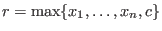
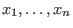
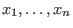

Next: GRBModel.AddGenConstrMin() Up: GRBModel.AddGenConstrXxx() Previous: GRBModel.AddGenConstrXxx()
Add a new general constraint of type GRB.GENCONSTR_MAX to a model.
A MAX constraint
 states that the resultant
variable  should be equal to the maximum of the operand variables
 and the constant
should be equal to the maximum of the operand variables
 and the constant  .
.
| GRBGenConstr | AddGenConstrMax ( | GRBVar | resvar, |
| GRBVar[] | vars, | ||
| double | constant, | ||
| string | name ) |
resvar: The resultant variable of the new constraint.
vars: Array of variables that are the operands of the new constraint.
constant: The additional constant operand of the new constraint.
name: Name for the new general constraint.
Return value:
New general constraint.